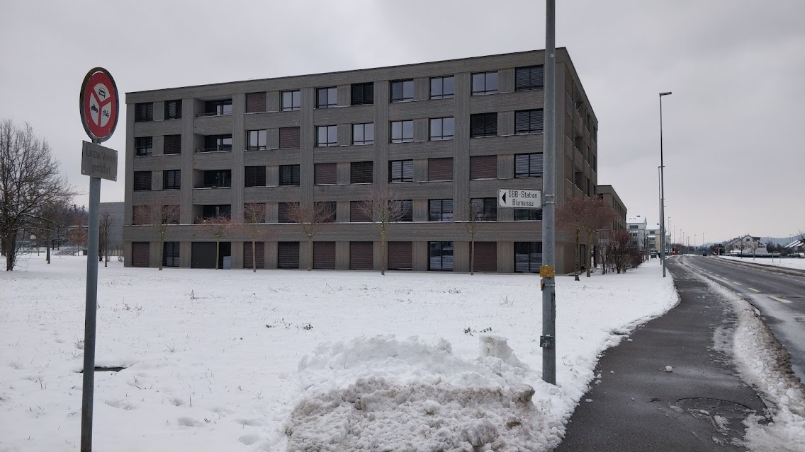
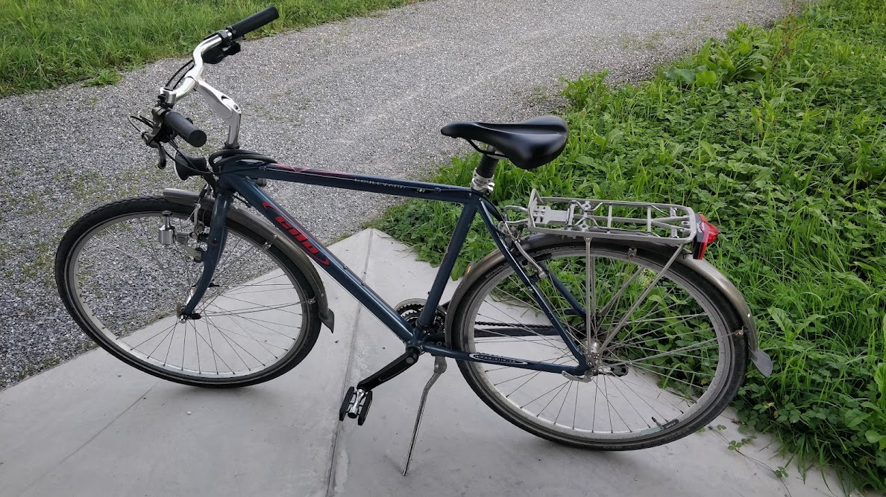
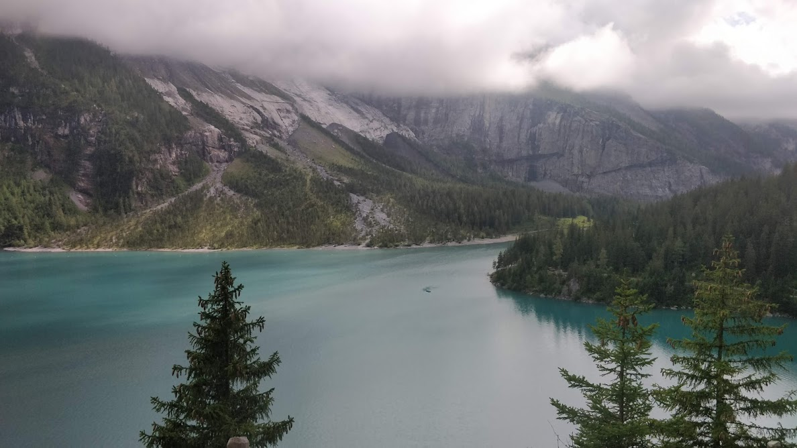

Earlier this year, I went to Switzerland for an 8 month internship. My internship was in the field of mobile application security. The field of work itself was interesting, and of course Switzerland was amazing as well.
 I lived in a small studio apartment about a 6-minute bike ride away from my office. Unlike in India, you can actually ride a bike here without the stress of getting run over by a car. In fact, the way from my place to the office was through a path completely separate from the main road.
The city itself was small, but extremely beautiful. Unfortunately, I didn't get to go to the office for most of my internship and worked alone from my studio apartment.
That, along with the fact that I rarely got to communicate with my mentor, and even when I did, it was mostly through email, left me a bit direction-less.
Apart from the small hiccups in work, Switzerland was amazing, as expected. I spent my weekends cycling around the city or travelling across the country. Either solo, or with friends — sometimes from the office, and sometimes from the place I was living at.
Then for the last two weeks, I took time off and went on a solo trip across a few neighbouring countries. It was an amazing experience. I visited Paris, Amsterdam, Berlin, Prague and Vienna — all for two or three days.
I loved Amsterdam for the chill atmosphere and its canals, and stayed there more than I had initially planned. I loved Prague's vibe as well, the city was extremely beautiful - learnt that Kafka was from there. Also saw Dune in a small, cool theatre in Vienna. Looking back, I have so many good memories from all the places I visited.
I could go on and on about small details regarding everything I observed while I was there. But I'm going to keep this post short. Would have been better if I wrote blog posts more frequently to cover things in more detail. Maybe I'll do that next year.
For now, I have returned to India. At this point, I don't really know what I want to do in life. But I do have a better sense of where I want to head. Living in Switzerland has made me realize that there is a lot more to life than the singular dimension I had been pursuing all my life.
Until next time.